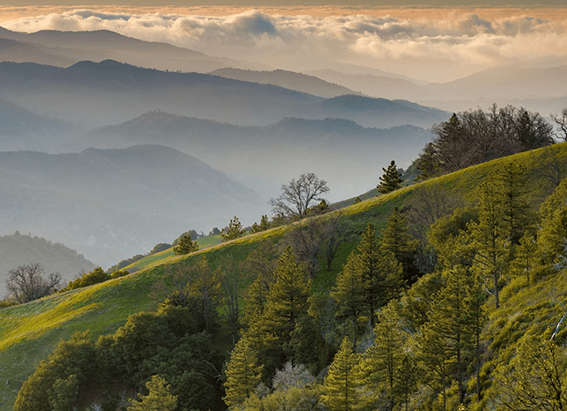

NATIONAL GEOGRAPHIC

How meeting Morocco's craftspeople inspired Peter Bellerby to become a globemaker
TRAVEL

You might think it’s a given that a globemaker is well-travelled; making or painting a globe is, after all, like having a travel brochure staring you in the face all day. In my case, it’s also, apparently, in the blood. My great-grandmother was Marion Carswell Livingstone, who, according to my grandmother (with whom I’d never argue), was descended from David Livingstone. But when I travel, it’s often to see where globes are made, as much as the place they’re made in.
I’ve visited Morocco a number of times over the years. There are plenty of artisanal craft pieces on sale in the souks, in whichever city you land, and I often drag my partner into ramshackle workshops, or ‘house factories’. Sometimes, these are found within yards of the shop where the crafts are sold sometimes just above. The artisans typically ply their trade in cramped conditions, with materials overflowing out of cupboards and shelves full to bursting.
I took a trip to Morocco in 2008, before I’d become a globemaker. I searched for a globe to buy, and after several days of touring the souks and workshops, I found a few simple brass celestial pieces. Although nothing was really worth shipping home, seeing the artisans at work sparked something in me, not only inspiring me but giving me the confidence to have a go at making globes myself. The workshops I visited weren’t exactly cutting-edge, relying often on crude handmade tools and patterns, yet the pieces they made were very pleasing.
On a later trip, now as a fully fledged globemaker, I took my company to Marrakech on a three-day staff-bonding weekend. I managed to forget the suitcase containing all the materials I’d prepared for our first afternoon’s tasks. So, that morning, while the team were on a treasure hunt around the city, I hurtled around the tiny streets on the back seat of a scooter with one of chefs from the riad we were staying in helping me source art supplies. Getting the materials, raw canvas and flat-pack frames took all morning dedicated art shops, it turned out, were a tough find in Marrakech. So, we ended up asking in numerous small shops simple businesses with little delineation between shop and factory floor, often with one person running the whole joint.
Once we’d arranged for the pieces to be made up (everything was hand-cut and made to measure), we had some time to kill, and the chef asked if I wanted to meet some of his friends. We parked outside a row of what looked like derelict houses. Inside, teams of men were working on different products for the souks and riads. In one room a man was using a lathe, but the noise aggressive squealing was unlike any sound I’d heard from lathes I’d worked with. He also had a long chisel and was calmly working a piece of brass shaped like a cup (candleholders, I found out). Brass shards were flying in every direction, and he wore no safety goggles, just regular spectacles and what looked like a faded football-team cap to cover his head. One moment of excess pressure and the chisel would probably have ripped his hand off.
A trip down a steep flight of steps into the back room revealed a pit of sand, where I was immediately struck by the fierce heat. There was a furnace to one side heating up the metals, and the brass pieces were being cast in the sandpit. Intoxicating (and no doubt toxic) smoke and fumes filled the air.
The level of concentration possessed by skilled artisans is often a surprise to the outsider. Not only does the work require it, it demands it. As soon as you don’t feel this intensity, then the machine is doing the work for you. In all the places we visited in Marrakech, other than a brief look up to acknowledge our arrival, the craftsmen focused on their work, undistracted by heat, noise, fumes or the inherent danger.
These moments, meeting Morocco’s craftspeople, made me reflect on my work as a globemaker and how, although there are stark differences in craftsmanship across the world, the level of concentration and focus on the objects at hand, and the dedication needed when creating, is universal. And although they made entirely different objects and in a completely different country to mine, our work similarly highlights the importance of craft and making something that I hope is always celebrated.
Comments :
- john Very good
- john Very good
Leave a Reply
Your email address will not be published. Required fields are marked*
Related posts:
-
 The land of the Sleeping Beauty Cave is waking up to tourism
The land of the Sleeping Beauty Cave is waking up to tourismOne autumn morning near the village of Radavc in the Rugova Valley of Kosovo, I took a walking path from my hotel along the White Drin River, a brisk and chilly habitat for trout that flows from the Rusolia
View article -
Is California’s Condor Trail the next great thru-hike
The rugged chaparral of California’s Sespe Wilderness lay hidden under the camouflage of mahogany and sage hues. Nearly a week into her thru-hike on the Condor Trail, Brittany Nielsen surveyed this scraggly landscape
View article -
 How sport climbing is helping to revitalize a Greek island
How sport climbing is helping to revitalize a Greek islandFor more than 50 years, Antonis Kampourakis woke at dawn, strapped on fins and a mask, and dived deep into the Aegean Sea. His aim? To harvest the valuable sea sponges that sustained the Greek island of Kalymnos for centuries.
View article